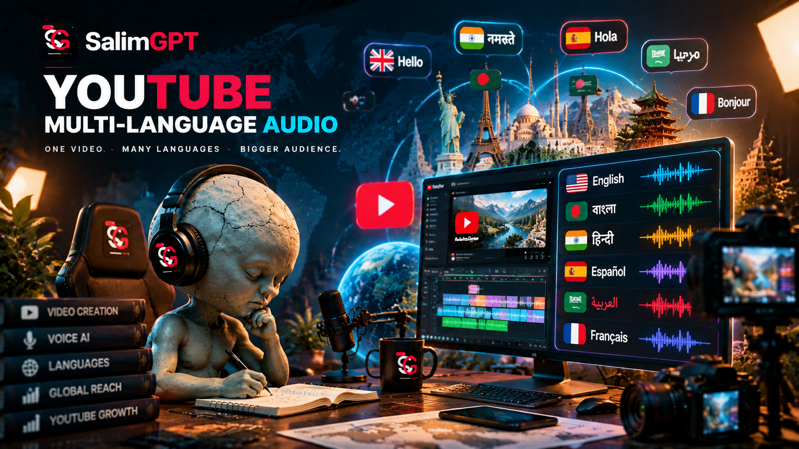
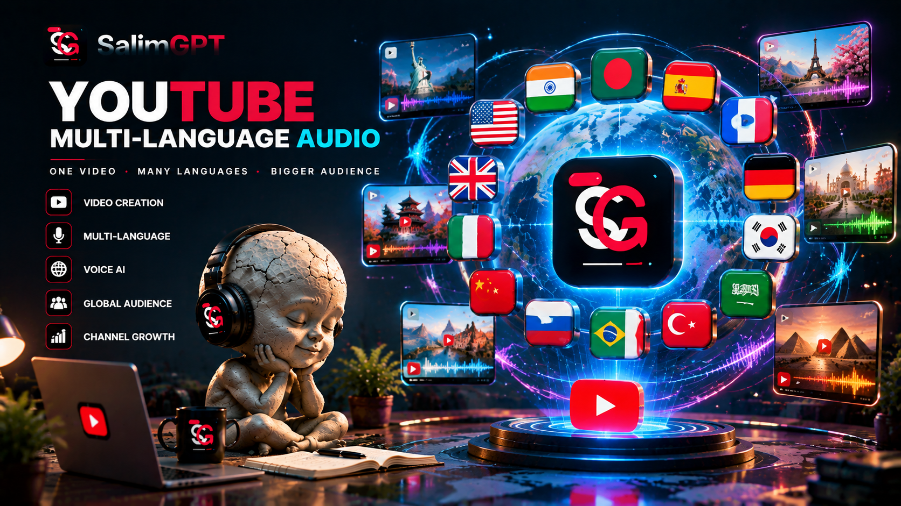

One Main YouTube Channel
SalimGPT keeps its primary YouTube documentary presence centered on one main channel rather than fragmenting the video library across separate language channels.
SALIMGPT GLOBAL
SalimGPT uses one main YouTube channel as its central documentary video destination, with multi-language audio used where supported to make the same documentary accessible to audiences in different languages.
This approach keeps a documentary connected to one primary video while allowing viewers to select an available audio language. Language availability may differ between documentaries and can expand as localization and production work develops.

ONE VIDEO, MULTIPLE AUDIO OPTIONS
Instead of treating every language as a completely separate YouTube video network, SalimGPT's structure is built around one main YouTube channel with additional audio languages attached to a documentary where supported and available.
SalimGPT keeps its primary YouTube documentary presence centered on one main channel rather than fragmenting the video library across separate language channels.
A documentary can remain associated with one primary video while different audio versions serve viewers who prefer different languages.
Additional audio tracks can provide localized narration without requiring a separate primary documentary upload for every language.
The documentary's central visual storytelling can remain consistent while narration and other language-dependent elements are localized.
Where multiple audio tracks are available, viewers can use the language options provided by the platform to select an available track.
Additional audio languages may be introduced as translation, narration, review and production capacity expands.
AVAILABILITY CAN VARY
Audio availability can differ according to the documentary, localization status, editorial review and production readiness. The presence of a SalimGPT language edition does not automatically mean that every documentary already has an audio track in that language.

LOCALIZATION WORKFLOW
Creating an additional documentary audio version can involve translation, adaptation for natural narration, voice production, timing, pronunciation review, editorial checking and technical preparation before publication.
AI tools may assist parts of the workflow, including language and production tasks, while editorial judgment, source verification, review, creative direction and final approval remain human-led.
MULTILINGUAL PRINCIPLES
A multilingual documentary should remain recognizably the same researched work even when its narration is adapted for another language.
Localization should communicate the intended documentary meaning without introducing unsupported claims or changing the substance of the research.
A translated narration may need linguistic adaptation so that it sounds natural and remains understandable in the target language.
Audio versions should pass through relevant language, editorial and production review before being treated as publication-ready.
Multiple audio versions should support access to the same documentary rather than creating contradictory versions of the underlying work.
TWO CONNECTED SYSTEMS
Both systems support multilingual access, but they have different roles within SalimGPT.
YOUTUBE
Provides different audio-language options for a documentary within SalimGPT's central YouTube video distribution model where supported.
WEBSITE
Provides a dedicated language-specific web environment for documentary discovery, navigation, explanatory information and audience access.
FOR VIEWERS
When a SalimGPT documentary includes multiple audio tracks, the available language choices are provided through the video platform's supported audio controls. Available options may differ from one documentary to another.
For the broader list of official SalimGPT destinations, language editions and distribution pathways, use the global navigation pages below.